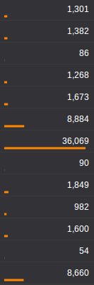

Underline doesn't take away space in a table or a list of data and by varying the length of the underline you can help readers scan much faster and get an idea of the data and its distribution without having to read each number.
Visualize data tables with variable length underlines
December 23, 2013
List
The simplest and often the best way to show a list of numbesr is to simply list them.
However, if the reader is to find the largest value she might have to go through each number, especially if all of them have the same number of digits. Sorting by the value will help, but it doesn't work if it's on a table that is sorted by some other figure.
The line height of the list in the above figure can be reduced but a similar height can be found in most software, including spreadsheets and popular BI.
Bars
Adding a bar, like a horizontal bar chart, helps you clearly identify the largest value, as well as get an understanding of the distribution without having to go through the numbers.
But it's taking up a lot of space - at least another column width or more if you want to make it aesthetically pleasing. Another problem is that it might distract someone trying to read through the numbers; of course, choosing a more subtle color will help in that.
Displaying text over bars reduces the space, but it makes it lot harder to read the numbers.
Underline
Decreasing the height of the bar to a few pixels, or even a single pixel can still give the same effect as bars. Also, you can place them underneath the numbers so that it doesn't take up an extra column.
Right aligning the bars takes away the cluttered feeling. Again, choosing a more subtle color and/or reducing the thickness of the lines will help reduce the highlighting effect.
The scale could be linear or logarithmic. A small axis could be place at the column heading to stop readers from misinterpreting.


